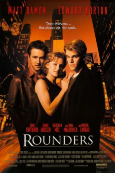

Rounders (1998)


Trust everyone... But always cut the cards.

País:Estados Unidos, 121 minutos.
Idiomas:Ruso, Inglés, Hebreo
GénerosDrama, Policial
Director/es:John Dahl
Guionistas:David Levien, Brian Koppelman
Códec de vídeo:Unknown
Número: 3604
TomatoMeter:

--

--
Clasificación IMDb:


7.3/10 (1.8K votos)
Certificación:
Argumento:
A young reformed gambler must return to playing big stakes poker to help a friend pay off loan sharks.
Reparto
Matt Damon (Como Mike McDermott), Edward Norton (Como Lester 'Worm' Murphy), John Turturro (Como Joey Knish), Gretchen Mol (Como Jo), John Malkovich (Como Teddy KGB)
Medio: Archivo de video,
Localización: D:\PELICULAS\ACTORES\Matt Deamon\Rounders\Rounders [10th Anniversary Edition].1998.BRRip.x264.AC3-VLiS.mp4
Prestado: No
Rel. aspecto: Unknown